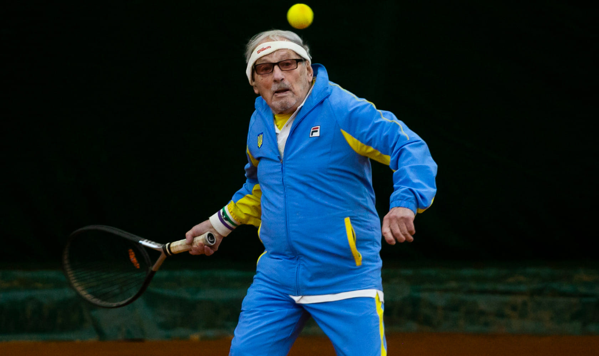
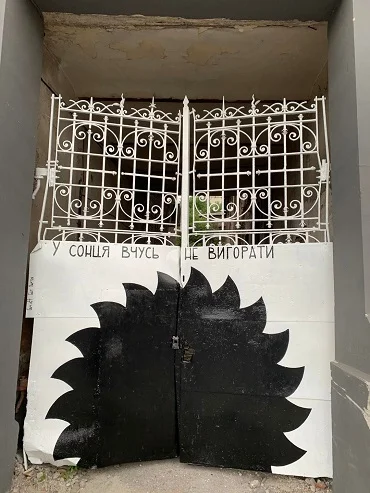
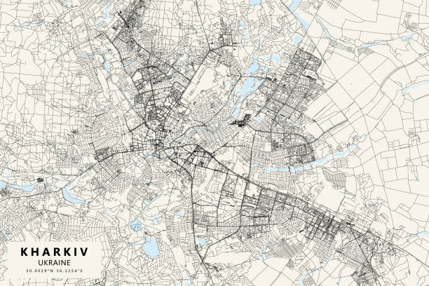
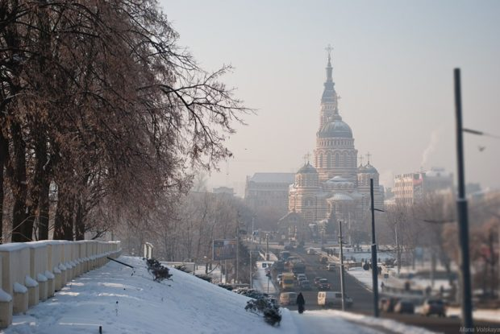

Усім відомо, що Харків – це перша столиця України, місто з найбільшою площею і ринком у Європі та промисловий центр держави. Проте багатовікова історія, політична ситуація та культурне підґрунтя роблять це місто унікальним по своїй природі. Пропонуємо вам дізнатися більше про сучасний Харків та незвичайні історичні факти про нього.
Чому сучасний Харків – це унікальне місто?
Харків – це єдиний у Східній Європі регіон, що за останні пару десятків років, закріпив за собою статус міста, що має тенденцію до скорочення (shrinking city). Що це означає? Як правило, розвиток міста у будь-якій країні світу характеризується збільшенням населення та поступовою розбудовою, проте Харків пішов зовсім іншим шляхом.
Так, безпосередня близькість першої столиці України до російських кордонів змусила місто переосмислити свої можливості, та трансформуватися не через новобудови та розширення, а через нове використання наявних просторів. Тож, на перший погляд, може здаватися, що у Харкові зовсім нічого не змінюється, проте насправді у місті відбувається постійне внутрішнє перетворення
Найстарший у світі тенісист
Леонід Станіславський — 99-річний харків’янин, який потрапив до Книги рекордів Гіннеса, як найстарший у світі тенісист, що бере участь у змаганнях. Минулого року він літав грати у Сполучені штати Америки, а цьогоріч вже встиг взяти участь у змаганнях на заході Australian Open. Зараз Леонід вимушено проживає у Литві, адже був змушений виїхати з Харкова, через постійні обстріли з боку рф.
Харків – місто вуличних художників?
Харків’яни добре знайомі зі стріт-артом, адже одним з найвідоміших сучасних представників цього руху є Гамлет Зіньківський, – харківський митець, філософські роботи якого прикрашають вулиці міста ще з 2007 року. Вуличний художник не просто залишає малюнки на стінах, його роботи сповнені філософським змістом, й змушують задуматися кожну людину
"У сонця вчусь не вигорати” Фото: Гамлет Зіньківський
Сьогодні створена спеціальна Гугл Мапа малюнків, щоб кожний охочий зміг оцінити всі роботи художника. Проте нові стріт-арти продовжують з’являтися навіть попри страшну війну.

"У загарбника свої квіти, касетні” Фото: Гамлет Зіньківський
Найбільше місто у світі…
Територіально, Харків знаходиться на 50-й паралелі – невидимій географічній лінії, що пролягає через весь земний шар. На ній же знаходиться Краків, Прага, Майнц та багато інших відомих міст. Проте Харків є найбільшим містом у світі на 50-й паралелі.
Харків був столицею двічі
Мало кому відомо, що Харків був не тільки першою столицею України, але й центром іншої великої держави. Так, у лютому 1918 року революціонери створили Донецько-Криворізьку республіку зі столицею у Харкові, яка включала сучасні Донецьку, Луганську, Дніпропетровську, Запорізьку, а також частково Харківську, Сумську, Херсонську, Миколаївську та Ростовську області. Щоправда, проіснувала республіка всього близько двох місяців.
Легендарна кондитерська фабрика
Сьогодні за адресою площа Конституції, 11 жителі та гості міста можуть відвідати незвичайний
кондитерський
магазинчик. Фасад цього закладу не має нічого особливого, і якщо не знати історії цього місця, то
можна легко пройти
повз, навіть не помітивши його.
Проте “Ведмедик” – це унікальний магазин, який було відкрито ще на початку минулого століття, а
саме у 1896 році.
Сьогодні, – це легендарна історія про те, як маленька крамничка перетворилася на велику кондитерську
фабрику.
Перший ядерний вибух в Україні
Весь світ чув про Чорнобильську катастрофу, проте лише одиниці знають про те, що перший ядерний вибух в Україні стався задовго до катастрофи у Чорнобилі. Так, 9 липня у 1972 році під Харковом було підірвано ядерну бомбу на глибині близько 2 кілометрів. Ця інформація була повністю засекреченою радянською владою, і навіть місцевих жителів не попереджали про використання ядерної зброї та можливі наслідки цього вибуху. Передувала використанню радіоактивної бомби безпрецедентна аварія у газовій свердловині з масштабним витком блакитного палива. За свідченнями очевидців зі свердловини піднявся факел заввишки не менше 200 метрів. Проте “контрольований підрив” не дав бажаного результату, натомість на місці вибуху утворився величезний атомний гриб, який піднявся ще вище у небо, а вибухова хвиля зруйнувала всі домівки навкруги. Ліквідували аварію за стандартною, для радянської влади, схемою – розкопали навколо котлован, завели у палаючу шахту труби та перекрили вентилі. Розголошення інциденту так і не надали. Сьогодні свердловина залишається законсервованою.
Харків до 24.02.2022
Місто Харків – великий український центр ділового та культурного життя. Його історія розпочалася 368 років тому. Це найбільше місто на сході України. Сучасний дух Харкова сформувався наприкінці XIX століття з появою першого університету. А внаслідок розвитку промисловості тут відкрили й технологічний інститут. Відтоді місто розвиває освітній напрям. Тому сьогодні Харків – це прогресивне за духом місто, яке щороку кличе до себе безліч студентів. Тут діє понад 40 ЗВО, а науково-дослідних інститутів – аж 60.
П’ять цікавих фактів про Харків:
- в одному зі спальних районів проживає більше людей, ніж у Маямі;
- одяг вішають не на «плічка», а на «тремпель», їздять не на «трамваї», а на «дрифткарі», і носять не «взуття», а «педалі».
- у побуті тут часто говорять російською, але вільно переходять на українську мову та готові горою стояти за свою країну та її культурну спадщину;
- люди гостинні та дедалі більше уваги приділяють іноземним мовам: на вулицях усе частіше можна почути англійську, німецьку, французьку, польську мови та, звичайно ж, рідну українську з різними діалектними словами;
- зовсім недалеко від центру діє найбільший в Україні ринок Барабашово, де можна купити все: від голки до рожевого слона.
Харків можна впевнено назвати одним із найзеленіших міст України завдяки паркам і скверам незвичайної краси. Якщо турист запитує, яке місце краще обрати для прогулянок, то йому обов’язково порадять сад імені Тараса Шевченка, Центральний парк культури та відпочинку імені Максима Горького чи колишній міський сад у самому центрі міста. Візитівка Харкова – площа Свободи. Вона є однією з найбільших у Європі, бо займає аж 12 гектарів. Планування вражає розмахом, і саме тут проводять найбільші концерти та заходи. Саме таку розповідь про Харків ви могли б почути від українця до 24.02.2022. Але історія змінилася. Це місто вже ніколи не буде таким як раніше. Тепер тут попіл, кров і звуки вибухів. Так буде не завжди. Україна відбудує Харків ще кращим. На вулицях лунатиме сміх, а перехожі щиро всміхатимуться.Зараз ми боремося, проте перемога близько.